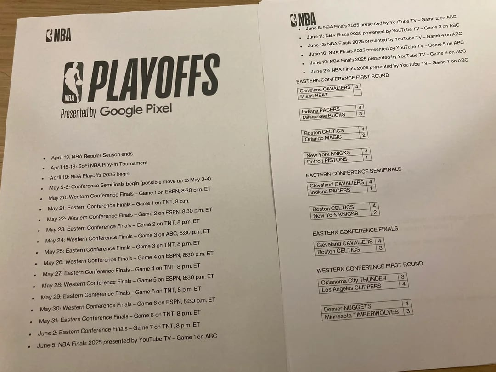
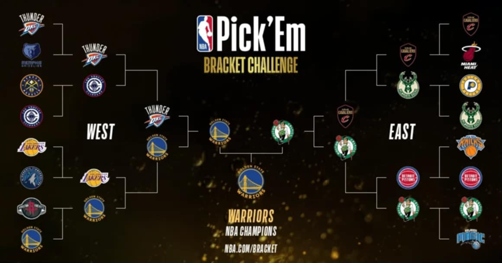
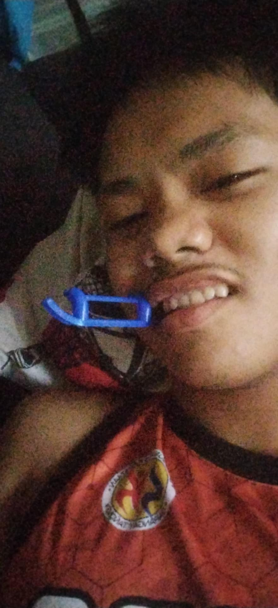
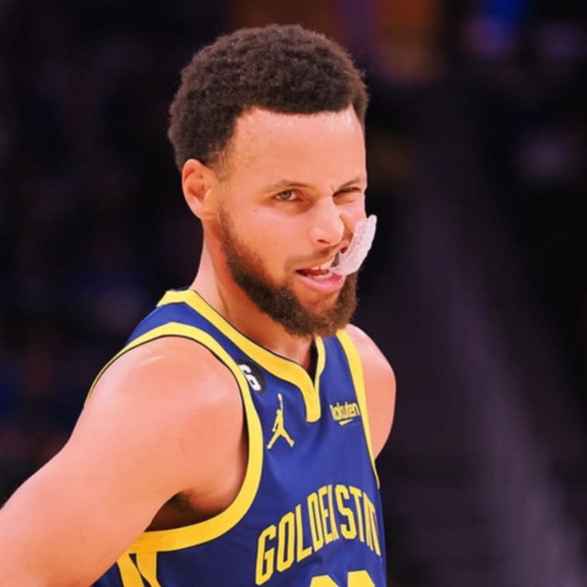

Salang Na! NBA Action Dito sa Jumbotron!
TAMBAYAN ALL-STARS: 78
4Q 02:30
MGA BISITA: 75
(Paalala: Ang video stream ay sample. Para sa aktuwal na panonood, gamitin ang mga opisyal na NBA streaming services.)
Mga Astig na Nakaraang Laro (Past Game Highlights):
Jhoven's Corner - Mga Eksena at Sikreto!
Si Jhoven, Nag-Transform!
Ironman ng Tambayan, nagpakitang-gilas!
NBA 2025 Playoff Script?!

TOP SECRET - EYES ONLY NI JHOVEN!CONFIDENTIAL: Nasingit ni Jhoven! Wag ipagkalat, ha?!
Bracket ni Boss Jhoven!

Sino kaya ang tatama sa prediksyon? Tayaan na 'to!
Pagod na si Boss...

Kaka-analyze ng laro! Tulog muna para may energy bukas!
RARE ITEM!

Mouthpiece ni Steph Curry, nahablot ni Jhoven! (For display only... baka?)
DJ Jhoven Says:
"GRABE ANG LABAN! PUSO MGA KA-TAMBAYAN! SINO MANANALO DITO?!"